Thank you for purchasing Wordpress template. This documentation consists of several parts and covers the entire process of installation and setting the Wordpress website starting from scratch.
What is WordPress CMS?
WordPress is a free and open-source blogging tool and a content management system (CMS) based on PHP and MySQL. With its help you can create websites and powerful on-line applicationand requires almost no technical skills or knowledge to administrate. Due to lots of its features (such as ease of use and flexibility) Wordpress has become the most popular platform for website development.Детали
What is Wordpress Template?
Wordress template is a theme for Wordpress CMS platform. In other words, you can easily change your website appearance simply installing new Wordpress template in a few easy steps. Despite its simplicity, Wordpress template contains all necessary source files that can be altered the way you need.
Template Structure
Template package includes several folders. Let check what's inside:
documentation - contains documentation.
documentation.html - main documentation file that you are reading at the moment :)
screenshots - contains screen-shots of the template. However the are not required to edit the template.
fonts_info.txt - contains links to download fonts used in the template.
info.txt - instructions on how to extract source files.
Preparation
Prior to install Wordpress website, you need to get fully prepared. It is recommended to get next aspects covered:
Software
Before you even start working with Wordpress template, we recommend you to download required software. You can check required software on the template preview page.
Requirements can alter from template to template, so we will list the most important ones:
First of all you'll need correct software to extract file from the password protected archive sources_#########.zip. You can use WinZip 9 or a higher version (if you have Windows OS) or Stuffit Expander 10 or a higher version (if you have Mac OS).
You might also need Adobe Photoshop. It is used to edit source .PSD files in case you need to change the graphic design and images of the template.
For editing source code of the template you can use code editors like Adobe Dreamweaver, Notepad++, Sublime Text, etc.
To upload files to hosting server you will need FTP manager like Total Commander, FileZilla, CuteFTP, etc.
Hosting
As WordPress CMS is PHP/MySQL platform, you need to have hosting server prepared.
In case you already have hosting server, you need to check whether it is compatibility with WordPress hosting requirements whether you can host Wordpress website with it.
You can also install Wordpress on your PC or laptop using local server. You can use next software to create local server WAMP, AppServ, MAMP, etc. All of them support Wordpress and can be installed as a regular program.
You can use next tutorials to set up the local server:
Template installation has never been that easy. Installation process includes 3 steps only: Cherry Framework installation, child theme installation, sample data installation.
All installation steps can be implemented through the Wordpress dashboard. Installation has never been this quick and easy.
There are two ways to install the theme:
Using Cherry Wizard plugin.
Manually unpacking the theme archive.
Cherry Wizard Plugin Installation
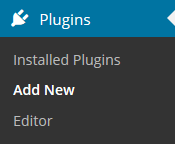
Log into Wordpress dashboard.
Open the Plugins tab.
Click Add new
Enter "Cherry Wizard" into the "Search plugin" field.
After you get results of the search, click Install Now and install the plugin.
PLugin Activation and Installation
Open the Installed Plugins tab.
Click Activate under "Cherry Wizard" plugin.
After activation you will see a notification and you can start installation Begin installation or dismiss it Dismiss
Entering Activation Key
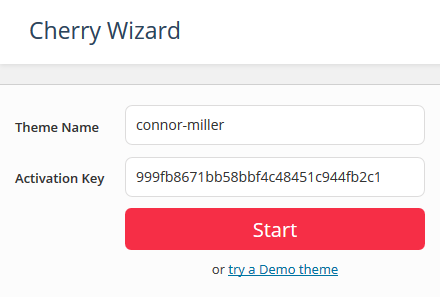
Enter name of the theme in the Theme Name field.
Enter activation key in the Activation key field.
If you did not purchase the theme, you can choose "or try try a Demo theme" to test the demo theme.
Downloading and installing framework and plugins
In case of incompatibility with server recommended settings, you will see next notification:
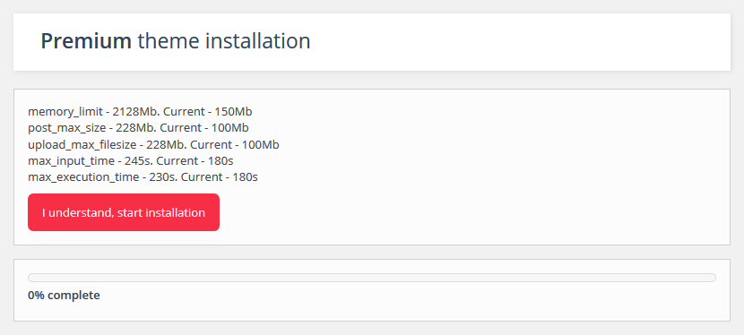
Recommended and current settings
You can check installation details of each plugin and component during installation process.
After installation is complete you will be automatically redirected to the next step.
Downloading and installing the theme files
In the next step you can install sample data from cloud, local computer or skip this step.
If you choose installation from cloud, installation process will begin.
Once all media files are downloaded, you will proceed to sample database files installation.
Check the list of available posts formats with descriptoin and settings below.
Stadard Post Format
Standard post format has next fields:
Post title - post title
Post content - post content
Categories - post category(ies)
Tags - post tags
Featured Image - post featured image
other fields that can be enabled in Screen Options at the top right corner.
Standard post format
Aside
Aside is a simplified stadard post format. In other words there is only a content field, so you don't need to enter title and other options.
Aside
Audio
Audio
Audio format is used to publish audio content.
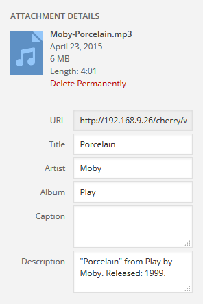
You can edit next fields in file settings in media gallery:
URL - audio file direct URL
Title (Заголовок) - audio track name
Artist (Исполнитель) - audio track performer
Album (Альбом) - audio track album
Description (Описание) - audio track description
Chat
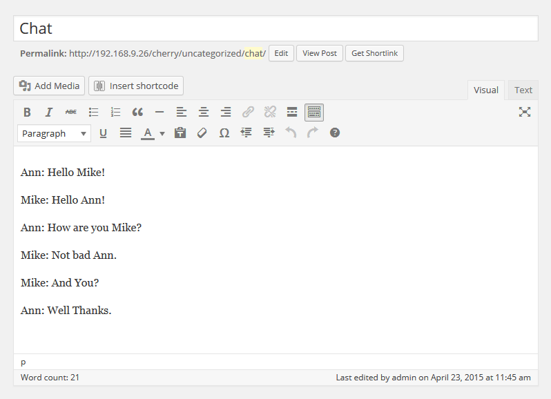
Content Structure
Chat format is a post with a content in the form of successive messages
Ann: Hello Mike!
Mike: Hello Mike!
Ann: How are you Mike?
Mike: Not bad Ann.
Gallery
Main feature of this post format is possibility to add unlimited number of images.
Adding a gallery:
Click Add Media.
Drag files or click Select Files to add images from local computer.
After images are uploaded, you can find them in Media Library. Click Uploaded to this post to view the images.
After editing you can close the media library. Uploaded images will be added automatically.
Gallery post form has the same fields as the standard post format has (e.g. title, content, category, etc).
Image
Image
Image format is a format that includes one image uploaded through Featured Image option..
Choosing this format you can turn off lightbox simply choosing proper option in the image settings Enable Lightbox .
Link
Link
Link post format can be created in the visual editor by adding a (URL) in standard format post.
Post title will be used as the URL text.
Link with description
Moreover you can add a description of the target page and link any part of the text.
Quote
Quote
Quote post is used to publish statements.
Status
Status
Status post is a message with content limited to 140 symbols. It is displayed with author avatar.
Video
Video
Video post is used to publish video content.
There are two ways to add video into the post:
Embedded Code - used to add video from external resource like Youtube, Vimeo, etc.
Add video through media library.
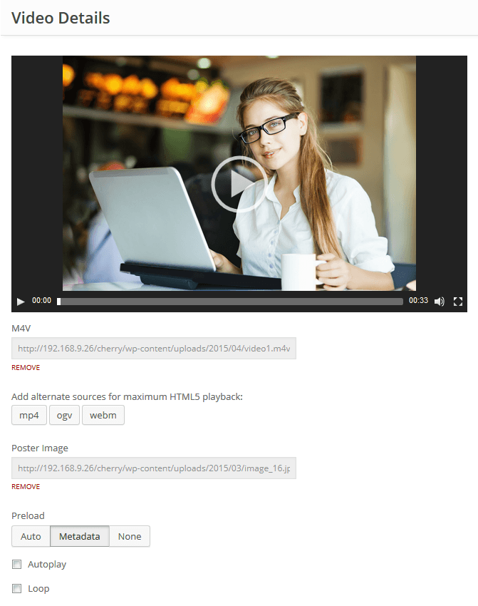
You can edit next fields in settings:
URL #1 Direct link to video in m4v format with possibility to delete
Alternative source of various video formats (mp4, ogv, webm)
Set an image for video poster
Set video to autoplay
Loop video
Creating slider post
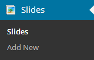
Slides are custom type posts and that differs them from standard posts (blog posts for example). It makes website content management easier.
Creating slider post
Log into the WordPress dashboard.
Click Slider tab.
Click Add New.
Enter title of the slide.
Upload the image using Featured Image option(click Set featured image).
You can use next fields with slide:
Caption - fields for slide caption.
URL - field for slide URL (external link can be used).
Once slide settings are set up click Publish.
Creating portfolio post
ATTENTION: Cherry Portfolio plugin must be installed.
In fact portfolio elements are custom type posts http://codex.wordpress.org/Post_Types#Custom_Types and that differs them from standard posts (blog posts for example). It makes website content management easier.
Creating portfolio post
Log into the WordPress dashboard.
Click Portfolio tab.
Click Add New.
Fill out all necessary fields (title, content).
Upload image using Featured Image option (click Set featured image).
Click Publish.
Choosing portfolio post format.
You can use next post types in portfolio post:
Image - default gallery post type. Displays post image only.
Slideshow - gallery project is displayed in slideshow. This gallery post type can contain unlimited number of images.
Grid Gallery - post images are displayed in a grid gallery. This gallery post type can contain unlimited number of images.
Video - you can add video from any video hosting like YouTube, Vimeo, etc using this gallery post type.
Audio - this gallery post type allows to add audio file.
Creating testimonial post
ATTENTION: Cherry Testimonials plugin must be installed.
Creating testimonial post
Log into the WordPress dashboard.
Click Testimonials tab.
Click Add New.
Fill out all necessary fields (title, content).
Upload image using Featured Image option (click Set featured image).
You can use next settings in testimonials post:
Name - author's name
E-mail - author's email address
URL - author's URL
Click Publish
Creating "Our Team" post
Creating "Our Team" post
Log into the WordPress dashboard.
Click Our Team.
Click Add New.
Fill out all necessary fields (title, content).
Upload image using Featured Image option (click Set featured image).
You can use next settings in "Our team" post:
Position - person position
Info - additional information
Click Publish
Cherry Options
Cherry Framework 4 contains vast number of theme configuration options. You can configure various aspects of your Wordpress website behavior and appearance. Cherry Options consists of several sections:
General
General section contains global Cherry Framework configuration settings.
Favicon image.
Icon image that is displayed in the browser address bar and browser tab heading. Max icon (.ico) size 32x32 px. You also upload favicon for retina displays. Max retina icon size: 152x152 px.
Maintenance mode
Enable/disable maintenance mode. Logged in administrator gets full access to the site, while regular visitors will be redirected to the page chosen below. You can also preview the maintenance page without enabling maintenance mode.
Maintenance page
Select a page that regular visitors will see if maintenance mode is enabled. You can select any Wordpress page here including your custom ones.
Use static area editor to arrange static blocks. You can drag-n-drop static blocks, remove them or add new ones using 'Create new static' field below.
There are several static areas available with self-explaining names:
Header top
Header left
Header right
Header bottom
Slider area
Footer top
Footer bottom
You can use "Create new static" section to add new static items to static areas. By default static item will be added to the first static area. You can drag it to desired static area later.
You can also configure the grid settings for each static element and assign custom classes. Column class settings define the static item width according to Bootstrap 12 column markup grid:
.col-xs-*: - width for displays with horizontal screen resolution less than 768px
.col-sm-*: - width for displays with horizontal screen resolution more or equal to 768px
.col-md-*: - width for displays with horizontal screen resolution more or equal to 992px
.col-lg-*: - width for displays with horizontal screen resolution more or equal to 1200px
The following video tutorial will demonstrate the main aspects of Static Editor.
Grid
Section contains global layout configuration settings.
Responsive grid
Enable/disable responsive grid. If for any reason you want to disable responsive layout for your site, you are able to turn it off here.', 'cherry
Layout
Select blog page layout. You can choose if you want to display sidebars and how you want to display them.
Container width
Width of main website container in pixels.
Blog
Section contains settings for Wordpress blog pages (listing, single post, post types).
Featured Media
Displays Featured Image, Gallery, Audio, Video in blog posts listing depending on post type.
Featured Image Size
Set dimensions for post featured images in pixels.
Featured Image Alignment
Set alignment for post featured images.
Post content
Select how you want to display post content in your blog listing: full - display fill post content, part - display part of the post (you can specify post part size below), none - hide post content.
Excerpt length
Specify number of words displayed as post part in blog listing.
More button
Enable/Disable "read more" button in blog listing.
More button label
Specify "read more" button label text.
Blog > Meta
Date
Show/Hide post publication date.
Author
Show/Hide post author.
Comments
Show/Hide number of comments.
Categories
Show/Hide post categories.
Tags
Show/Hide post tags.
Blog > Post
Featured Image
Display featured image at the single post page.
Featured Image Size
Set dimensions for single post featured images in pixels.
Featured Image Alignment
Set alignment for single post featured images.
Author Bio
Enable/disable author bio block. Author bio block is displayed on the post page.
Related posts
Enable/disable related posts block. Related posts block is displayed at the post page.
Allow Comments
Enable/disable comments for blog posts. Make sure comments are enabled in Wordpress \'settings->discussion\'. For posts that have already been published you need to enable comments individually in post settings.
Gallery Slider
Replace default Wordpress gallery shortcode with enhanced jQuery carousel.
Lightbox for images and videos
Adds lightbox for images and videos.
Styling
Section contains theme styling settings. Here you can edit main theme colors.
Body background
Set background for body container. You can specify background image or color, set background repeat, position and attachment.
Color themes
Changes colors for various theme elements like forms, typography elements, blocks with default styling etc.
Select whether you want your main logo to be an image or text. If you select 'image' you can choose a logo image from the media library in the next option, and if you select 'text' your Wordpress Site Title will be shown instead.
Image
Click Choose Media button to select logo image from the media library or upload your image.
Logo typography
Configuration settings for text logo. Here you can select logo font family, size, color etc.
Page
General page options section.
Background
Page background settings. You can select background color, upload footer background image, set its background position, attachment and repeat.
Grid type
Select layout pattern for main website container. Wide layout will fit window width. Boxed layout will have fixed width and left/right indents.
Boxed width
Header section width if boxed layout is active. Should not be more than Grid -> Container width value.
Featured Images
Enable/disable featured images for pages.
Page comments
Enable/disable comments by default for pages. For pages that have already been published you need to enable comments individually in page settings.
Footer
Settings for the website footer section.
Footer background
Footer background settings. You can select background color, upload footer background image, set its background position, attachment and repeat.
Typography
Typography settings for footer texts.
Grid type
Select layout pattern for footer website. Wide layout will fit window width. Boxed layout will have fixed width.
Boxed width
Header section width if boxed layout is active. Should not be more than Grid -> Container width value.
Footer Info text
Set custom text for Footer info static
Footer Logo
Logo type
Select whether you want your main logo to be an image or text. If you select 'image' you can choose a logo image from the media library in the next option, and if you select 'text' your Wordpress Site Title will be shown instead.
Image
Click Choose Media button to select logo image from the media library or upload your image.
Logo typography
Configuration settings for text logo. Here you can select logo font family, size, color etc.
Typography
Theme typography settings. You can configure all aspects of website typography, fonts, colors etc.
Select if you want to merge minify CSS files for performance optimization.
Dynamic CSS output
Output dynamic CSS into separate file or into style tag.
Shortcodes
Shortcodes is a powerful tool in content management (learn more). They are very simple in usage. First of all you need to switch to visual editor by clicking Visual.
Description: when forming a grid, you should "wrap" grid elements into [row] shortcode that has 2 additional settings, they are container type and custom class.
Description: when creating an additional nesting of rows, you should "wrap" its elements into [su_row_inner] shortcode that has two additional settings, they are container type and custom class.
size: - size of the column with possibility to set size for different resolutions
offset: - increases the left margin of the column
pull: -
push: -
collapse column paddings: - resets the settings of columns margin
class: - shortcode custom class
Spacer
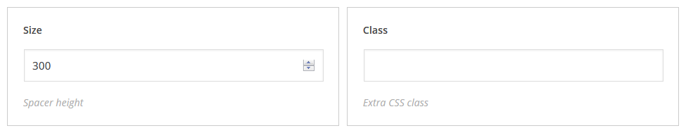
[su_spacer size="30" class="custom_class"]
Description: can be used in case you need vertical indent between blocks. Can be added in the visual editor with the help of the [su_spacer] shortcode and has next settings:
size: - spacer hight
class: - shortcode custom class
Clear
[su_clear class="custom_class"]
Description: used to reset the float. Can be used with a custom class.
[su_title_box title="Hello this is title" subtitle="This is subtitle" icon="icon: fa fa-user" icon_size="50" title_color="#333333" subtitle_color="#FF5566" icon_color="#444444" class="custom_class"][/su_box]
Displays double title: main and secondary titles of the text
title: - title content
subtitle: - subtitle content
icon: - filed to add an icon, icon can be added through media manager and icon picker
icon size: - icon size (can be used with text icons only)
scroll wheel: - enable/disable srollwheel zooming on the map
map Style: - map style
map height: - map height
pan control: - enable/disable map navigation
zoom control: - enable/disable map zooming
draggable map: - enable/disable dragging map
marker source: - marker image (use media manager to add image)
class: - shortcode custom class
Plugins
As the framework is developed on module structure, its functionality can be extended with the help of plugins.
Shortcode Template Editor
Plugin for unique template of shortcode
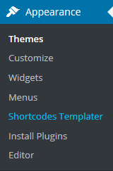
Log into the WordPress dashboard.
Click Appearance tab.
Click Shortcodes Templater
If you did not create any shorcodes, you will see welcome message only.
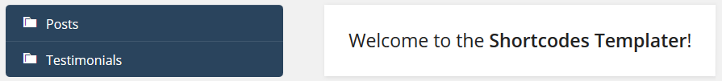
First of all choose necessary shortcode and click Add new
Now you can create a new template based on the default one. It will get a name with an ordinal prefix and shortcode name [Shortcode Name][N], e.g. post_1.
Shortcode name will be displayed in the list and in the title of visual editor. Template is physically stored in the directory: \wp-content\themes\cherryframework4\templates\shortcodes\
You can rename, copy and delete the template. While copying Duplicate the template, it will get a name with an ordinal prefix (by analogy with the new template) but with the structure of current template instead of default template.
Shortcode template editor allows you to create your own markup, display necessary (Mакросы) and set up display parametres in some of them. For example, clicking Content button, you will generate macros %%CONTENT%% that will display post content on the website.
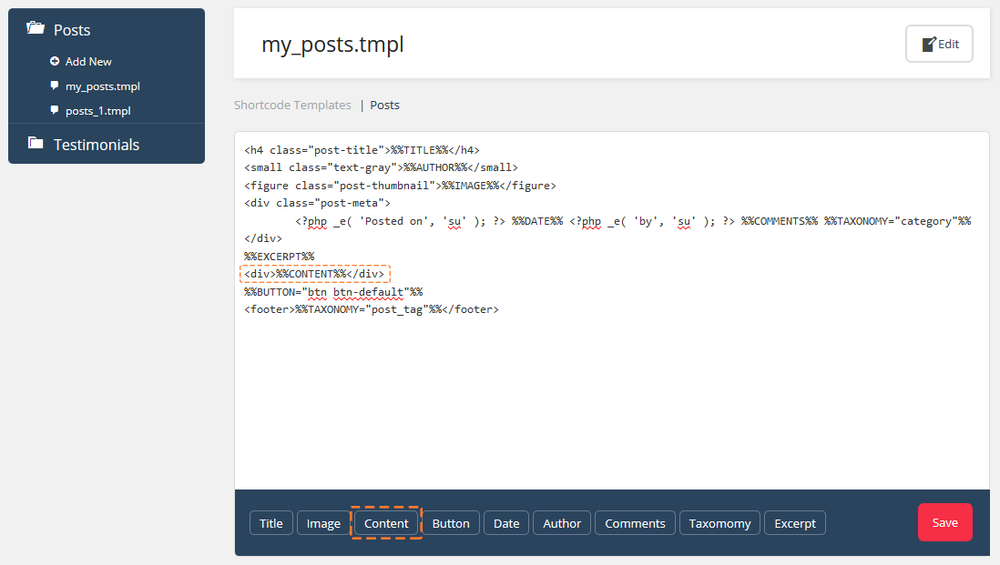
Shortcodes Ultimate
It is a plugin that helps you to work with shortcodes (pre-set shortcodes are used by default), documentation is available at http://gndev.info/kb/. Moreover, modified and new shortcodes are described at Shortcodes
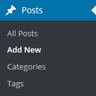
Log into the WordPress dashboard.
Click Posts tab.
Click Add New
Cherry Social
It is plugin to add sharing и follow lists on your website
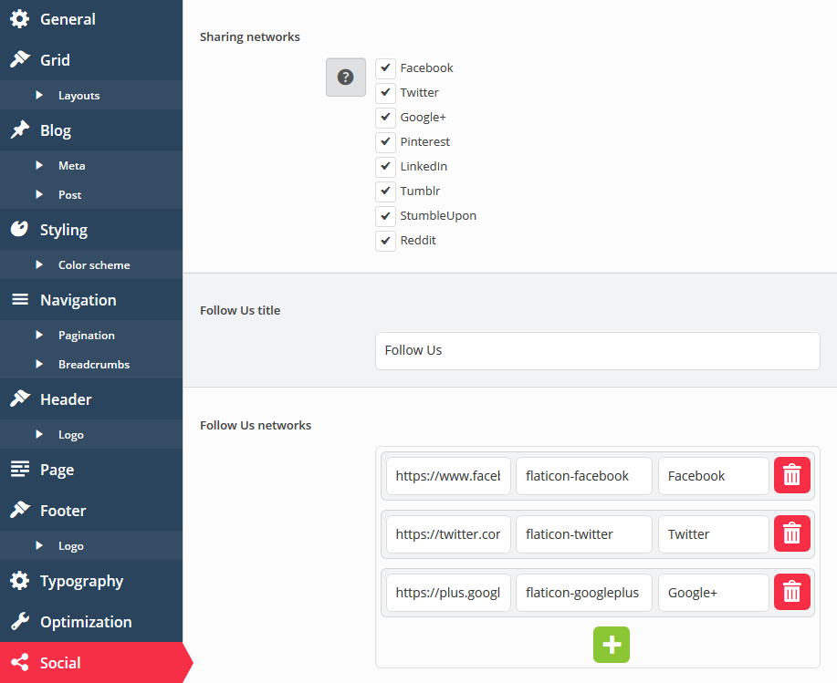
Choose social network for sharing
Facebook URL - Facebook page URL.
Twitter - Twitter page URL.
Google+ URL - Google+ page URL.
Pinterest URL - Pinterest page URL.
Linkedin URL - Linkedin page URL.
Tumblr - Tumblr page URL
StumbleUpon - StumbleUpon page URL.
Reddit - Reddit page URL.
Title will be used in static item
You can set up the list of social accounts and edit the URL, icon and title.
Services Plugin
This plugin ads a new post type called "services". Services posts have additional settings to form attractive blocks for service description. You can work with service posts the same way as you would work with regular posts. Service posts can be arranged into categories for a better navigation.
After plugin is installed and activated, you will see Service tab in the Wordpress dashboard, where you can work with services posts and categories.
Font icon CSS class - service description block icon CSS class
Service features description - service brief description
Price - price
URL to order this service - service URL
Is featured service - is this service popular?
Charts Plugin
Charts plugin intend for creating various charts and diagrams. Due to the reach collection of various diagram and chart types and advanced settings, you will be able to create a chart that fully fits your requirements.
After plugin is install and activated you will see Charts tab in the WordPress dashboard, where you can work with diagrams and charts.
Click "Charts > Add New Chart" to create a new diagram. Enter title and required settings on the chart page.
4 types of diagrams are available: progress bar, pie, doughnut, bar. You can choose the one you need clicking Chart type. Diagram settings depend on the diagram type you have chosen. Let's take a closer look at each of them.
Progress bar
Chart settings
Progress bar has next settings:
Progress bar type - progress bar type (radial, horizontal, vertical).
In this section you can set up the color formating of diagram. You can change elements, background colors and opacity, thickness and color of lines.
Chart Shortcode
After you are done with the chart settings, you can embed it into the post or page content using shortcode.
Cherry Data Manager
Data Manager plugin is used to export/import website data.
Export
Export is used to transfer website data from one server to another and to create backups. CLick "Tools > Cherry Export" and then click "Export Content" to use export feature. As the result, you will get an archive with website data.
Import
Click Tools > Cherry Import.
If server settings are correct, you will see loading screen. Open template folder "theme/sample_data" and upload file into Wordpress. You need to choose all files in the folder "theme/sample_data" (hot keys CTRL+A or Command+A), drag and drop them into the into the field.
Upload files located in the sample_data folder including .JSON и .XML. Once files are uploaded, click "Continue Install".
ATTENTION: .JSON и .XML files are sample demo installation required files. Continue Install button will activate only after you upload .XML и .JSON files.
"Continue Install" button will start process of sample data installation. Installation will take some time (depending on the server settings). Please wait till it's done.
Congratulations! You have successfully installed Cherry WordPress theme and now you can check how it looks like.
Team Plugin
This plugin adds new post type called "team". "Team" posts type have additional settings your team members posts formatting. You can work with team posts the same way as you would work with regular posts. Service posts can be arranged into categories for a better navigation.
After plugin is install and activated you will see Team tab in the WordPress dashboard, where you can work with posts and categories.
Team posts have next settings:
Position - employee position
Location - employee location
Telephone - employee phone
Email - employee email
Personal Website - employee personal website URL
Socials - employee social accounts
Testimonials Plugin
This plugin adds a new posts type called "testimonials". "Testimonials" posts type has additional settings for formatting your website/organization/products testimonials. You can work with service posts the same way as you would work with regular posts.
After plugin is installed and activated, you will see Testimonials tab in the Wordpress dashboard, where you can work with testimonials posts.
Testimonial posts have next settings:
Name - testimonial author name
Email - testimonial author email
URL - testimonial author website URL
Portfolio Plugin
This plugin adds new post type called "portfolio". "Portfolio" posts type have additional settings for portfolio formatting. You can work with service posts the same way as you would work with regular posts. Portfolio posts can be arranged into categories for a better navigation.
After plugin is installed and activated, you will see Portfolio tab in the Wordpress dashboard, where you can work with portfolio posts and categories.
This plugin allows you to create multi-column menu drop-downs. Plugin also allows to display necessary information in the main menu.
After plugin is installed and activated, you can navigate to "Appearance > Menus" in the Wordpress dashboard. Hover the menu tab and click Mega Menu icon.
This plugin adds new post type called "slides". "Slides" posts type have additional settings for slides formatting. You can work with service posts the same way as you would work with regular posts. Portfolio posts can be arranged into categories (sliders) for a better navigation.
After plugin is installed and activated, you will see Slides List tab in the Wordpress dashboard, where you can work with slides posts and categories.
Content wrapper - wrap content into additional block
FAQ
Engine installation
Download required Wordpress version. Check required version on the template preview page in the requirements list. Make sure yo are downloading correct version.
Once Wordpress platform files and folders are unpacked. you need to uplaod them to the hosting server.
You need to upload files and folders to the server into the directory PUBLIC_HTML or WWW.
If you can't find PUBLIC_HTML or WWW directory on your hosting server, contact your hosting provider and specify, where do you need to upload website files.
You can also take a look t these tutorials that contain detailed information on how to upload files to hosting server:
Enter Wordpress directory path into browser address bar and click Enter. Wordpress installation will begin.
Creating configuration file. Wordpress installation screen will inform you that you are missing configuration file. Click "Create Configuration File" button to create it.
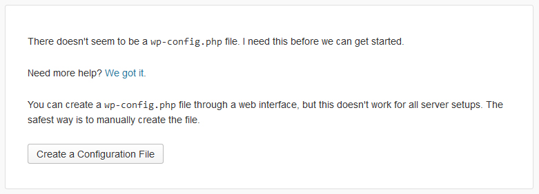
Database details. You need to enter Wordpress database connection details on this step.
Webiste details. You need to enter next details:
website name
administrator login and password
website e-mail
Click "Install WordPress";.
If you have entered correct details, you will see a message about successful installation and aWordpress dashboard access button.
You can also take a look at these video tutorials:
In case you are having a hard time installing sample data. check tutorials below:
ATTENTION: importing SQL file into your database will overwrite existing website content and settings.DO NOT import SQL file, if you need to save current content.
NOTE: Always back up your database before performing any modifications.
Please note that the prefix of WordPress database tables should be wp_.
Manual installation
In case you face difficulties installing through cpanel, you can use an alternative method.
Upload via FTP:
You need to have access to Wordpress files on FTP server via hosting cpanel file manager or FTP-client such as Filezilla, CuteFTP, Total Commander, etc.
If you have manually installed the theme with sample data but theme diferes fro mour lice demo, open Cherry Options and click "Restore Defaults".
Unpack CherryFramework.zip archive and theme####.zip archive on your local computer (right-click each .zip file, choose Unzip to… CherryFramework and theme####, after that you will see 2 folders: CherryFramework и theme####).
Upload CherryFramework and theme### folders into /wp-content/themes/ directory on FTP server.
Log into Wordpress dashboard (add /wp-admin after domain name in browser address bar).
Click Appearance > Themes .
Then click Available Themes, findtheme#### an activate it clicking Activate button.
Sample Data Installation
Follow instructions below to make Wordpress look like our live demo.
Copy "uploads" folder (you can find it in theme/manual_install/ template folder) into /wp-content/ folder on FTP server.
Open theme####.sql file (located in theme/manual_install/ folder) using any code editor(Recommended software - Dreamweaver или Notepad) and change all lines with "your_website_url_here" to your website URL via Find and Replace (hot keys - Ctrl+H). E.g.: http://www.mywebsite.com
There must be no forward slash "/" at the end of the URL, it also must start with http://www.
Save changes, close file.
Now you can import this file through phpMyAdmin or another tool of database management.
Sample Data Manual Installation
In case you are facing difficulties installing sample data, follow instructions below.
ATTENTION: importing SQL file into your database will overwrite existing website content and settings.DO NOT import SQL file, if you need to save current content.
NOTE: Always back up your database before performing any modifications.
Please note that the prefix of WordPress database tables should be wp_.
Follow instructions below to make the template look like our live demo.
Theme must be installed according to next instructions.
Copy "uploads" folder (it is located in theme/manual_install/ template folder) into /wp-content/ folder on FTP server.
Open theme####.sql file (located in theme/manual_install/ folder) using any code editor(Recommended software - Dreamweaver или Notepad) and change all lines with "your_website_url_here" to your website URL via Find and Replace (hot keys - Ctrl+H). E.g.: http://www.mywebsite.com
There must be no forward slash "/" at the end of the URL, it also must start with http://www.
Save changes, close file.
Now you can import this file through phpMyAdmin or another tool of database management
If you having a hard time installing via cpanel, you can use an alternative method.
Upload through FTP:
You need to have access to Wordpress files on FTP server via hosting cpanel file manager or FTP-client such as Filezilla, CuteFTP, Total Commander, etc.
If you have manually installed the theme with sample data but theme diferes fro mour lice demo, open Cherry Options and click "Restore Defaults".
Unpack CherryFramework.zip archive and theme####.zip archive on your local computer (right-click each .zip file, choose Unzip to… CherryFramework and theme####, after that you will see 2 folders: CherryFramework и theme####).
Upload CherryFramework and theme### folders into /wp-content/themes/ directory on FTP server.
Log into Wordpress dashboard (add /wp-admin after domain name in browser address bar).
Click Appearance > Themes .
Then click Available Themes, findtheme#### an activate it clicking Activate button.
Plugins Installation
Once you are done with theme installation and activation, you might need to install additional plugins:
If theme is installed and activated, you will see a notification with recommendation to install plugins at the top left aprt of the page. Follow the Begin installing plugin link. You can also install plugins clicking Appearance > Install Plugins in the main menu.
Check required plugins.
Choose Install in the drop-down menu Bulk Actions and click Apply.
Addendum
We've tried to make this documentation as easy and understandable as possible. However, in case of any difficulties with Wordpress template, you can contact our technical support department with any suggestions regarding documentation and template improvement. You can contact our tech support using:
According to the EU law on cookies, you must add a module to your site that will display warning about cookies used on your website. We recommend next modules:
In case fonts are not displaing correctly after template installation, open file .... of template ....
Next, find line with "...." and change it to "....".


{kind=link}
{kind=link}


{kind=link}


{kind=link}


{kind=link}

{kind=link}
{kind=link}
{kind=link}


{kind=link}
{kind=link}


{kind=link}
{kind=link}
{kind=link}